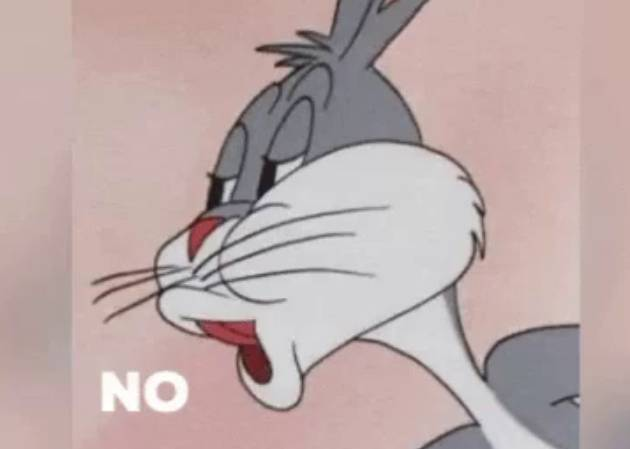

Bugs Bunny es uno de los personajes más icónicos de los dibujos animados. Creado por Warner Bros, este conejo astuto y sarcástico ha entretenido a generaciones con su ingenio, su famosa frase "¿Qué hay de nuevo, viejo?" y sus enfrentamientos con personajes como Elmer Gruñón y Yosemite Sam.
A lo largo de los años, Bugs ha aparecido en numerosas caricaturas, películas y series de televisión, ganándose el corazón de millones de fanáticos. Siempre está un paso adelante de sus enemigos, y su personalidad desenfadada lo convierte en uno de los personajes más queridos de la cultura pop.
 Los mejores momentos de Bugs Bunny